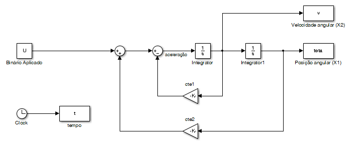
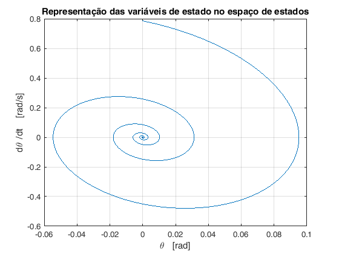
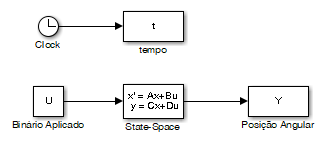
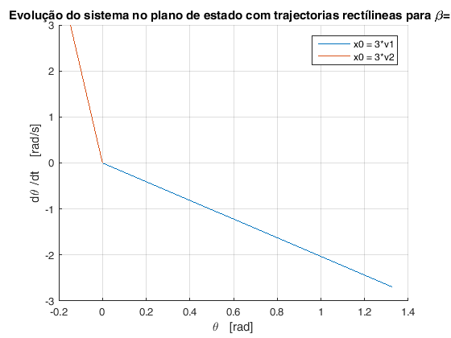
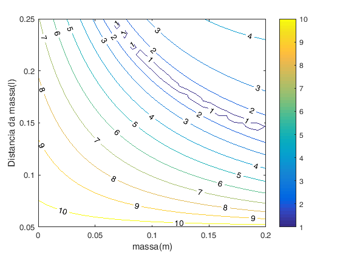

Trabalho de Laboratório nº3 - Dinâmica de um metrónomo básico
Autor: Diogo Vilar Sardinha
Contents
close all; clear; n=1; % inicialização do contador para as figuras
Questão 5
Diagrama de blocos que simula a dinâmica de um metrónomo básico
open_system('Q5')
De acordo com o modelo obtido na preparação teórica obtemos:
% Dados do enunciado: L=0.5; % comprimento da haste M=0.15; % peso da haste l=0.4; % Distancia a que está a massa da origem m=0.2; % peso da massa k=3; % constante da mola beta=0.1; % coeficiente de atrito g=9.8; % aceleração da gravidade % Condições Inicias: teta0 = 0; % ângulo inicial v0 = pi/4 ; % velocidade angular inicial % Valores do ganhos da retroacção da velocidade angular e do ângulo como % é representado no diagrama de blocos: cte1 = (beta) / ( ((M*(L^2))/3) + m*(l^2) ); cte2 = ( m*g*l + (M*g*L/2) -k ) / ( ((M*(L^2))/3) + m*(l^2) ); U=0; % Binário aplicado sim('Q5',7)
Representação da evolução do ângulo e velocidade angular do sistema ao longo do tempo:
figure(n) n=n+1; hold all; subplot(2,1,1) plot(t,teta) xlabel('Tempo [s]') ylabel('{\theta} [rad]') grid on title('Variação da Posição angular {\theta(t)}') subplot(2,1,2) plot(t,v) xlabel('Tempo [s]') ylabel(' {d\theta }/{dt} [rad/s]') grid on title('Variação da Velocidade angular {d\theta(t)}/{dt} ')

Representação da evolução do ângulo e velocidade angular do sistema no espaço de estados:
figure(n) n=n+1; plot(teta,v) title('Representação das variáveis de estado no espaço de estados') xlabel('{\theta} [rad]') ylabel('{d\theta }/{dt} [rad/s]') grid on
Trata-se de um foco estável.
Questão 6
J = ((M*(L^2))/3) + m*(l^2); % Momento de inércia
A = [0 1;(m*g*l+(M*g*L/2)-k)/(((M*(L^2))/3)+m*(l^2)) -beta/J];
B = [0 1]';
C = [1 0;0 1];
D = [0 0]';
x0 = [0 pi/4]';
O diagrama de Simulink que simula o sistema recorrendo a um bloco de modelo de estado pré-definido é:
open_system('Q6')

As matrizes A e B foram obtidas na resolução teorica.
Para efeitos de simulação, a matriz C é definida por C=[1 0;0 1]. Desta forma a saída Y é uma matriz que contém as variáveis de estado (posição e velocidade angular).
A matriz D é uma matriz nula.
Questão 7
Representação grafica da resposta no tempo para =0 e =1.
beta_aux=[0 1]; figure(n) fig = figure(n); set(fig, 'Position', [0, 0, 900, 500]) % x, y, largura e comprimento da figura n=n+1; hold all; for p=1:2 beta=beta_aux(p); A = [0 1;(m*g*l+(M*g*L/2)-k)/(((M*(L^2))/3)+m*(l^2)) -beta/J]; sim('Q6',4) subplot(2,2,p) plot(t,Y(:,1)) % Y(todas as linahs, coluna 1) title(['Respostas no tempo da Posição angular {\theta(t)} para {\beta}=',num2str(beta)]) xlabel('Tempo [s]') ylabel('{\theta} [rad]') grid on subplot(2,2,p+2) plot(t,Y(:,2)) % Y(todas as linahs, coluna 2) title(['Respostas no tempo da velocidade angular para {\beta}=',num2str(beta)]) xlabel('Tempo [s]') ylabel('{d\theta }/{dt} [rad/s]') grid on end
Representação grafica da evolução do sistema no plano de estado para =0 e =1.
beta_aux=[0 1]; figure(n) fig = figure(n); set(fig, 'Position', [0, 0, 900, 350]) % x, y, largura e comprimento da figura n=n+1; hold all; for p=1:2 beta=beta_aux(p); A = [0 1;(m*g*l+(M*g*L/2)-k)/(((M*(L^2))/3)+m*(l^2)) -beta/J]; sim('Q6',4) subplot(1,2,p) plot(Y(:,1),Y(:,2)) title(['Evolução do sistema no plano de estado para {\beta}=',num2str(beta)]) xlabel('{\theta} [rad]') ylabel('{d\theta }/{dt} [rad/s]') grid on end
Representação grafica da evolução do sistema no plano de estado para =0 e =1 considerando várias condições iníciais.
p=20; %numero de condições iniciais a testar col1= linspace(-pi,pi,p); % intervalo de posições angulares iniciais a testar col2= linspace(-2*pi,2*pi,p); %intervalo de velocidades nagulares iniciais a testar x0= [col1; col2]; %inicialização de x0 x0_aux = transpose(x0); aux = size(x0_aux); %aux guarda o numero de colunas e numero de linhas p_aux = aux(1); %p_aux guarda o número de linhas for beta=[0 0.1 1] figure(n) fig = figure(n); set(fig, 'Position', [0, 0, 1200, 500]) % x, y, largura e comprimento da figura n=n+1; hold all; for p=1:p_aux A = [0 1;(m*g*l+(M*g*L/2)-k)/(((M*(L^2))/3)+m*(l^2)) -beta/J]; x0=x0_aux(p,:); sim('Q6',4) plot(Y(:,1),Y(:,2),'DisplayName',['[{\theta} , {d\theta }/{dt}] = ', num2str(x0) ]) end xlabel('{\theta} [rad]') ylabel('{d\theta }/{dt} [rad/s]') grid on title(['Evolução do sistema no plano de estado para {\beta}=',num2str(beta)]) legend('show') %Inicialização das matrizes que guardam as componentes horizontais e %verticais que constituem cada vector do campo vectorial: cx= zeros(p_aux,p_aux); %componente em x cy= zeros(p_aux,p_aux); %componente em y Max = max(Y); mini = min(Y); %intervalos de pontos na horizontal do campo vectorial xx = col1; %intervalos de pontos na vertical do campo vectorial: if abs(Max(2))<=abs(mini(2)) yy = linspace(-mini(2),mini(2),p); end if abs(Max(2))>=abs(mini(2)) yy = linspace(-Max(2),Max(2),p); end % Criação da matriz que contem as componetes horizontais e % verticais de cada vector do campo vectorial: for i=1:p for j=1:p aux1=A*[xx(i);yy(j)]; cx(j,i)=aux1(1); cy(j,i)=aux1(2); end end quiver(xx,yy,cx,cy) %V ectores e valores próprios da matriz A: [eigenvectors,eigenvalues] = eig(A,'matrix'); disp(' '); disp(strcat('Para beta = ',num2str(beta),':')); disp(' '); disp('Matriz Modal cujas colunas são os Vectores Próprios de A:'); disp(eigenvectors); disp('Matriz Diagonal dos Valores Próprios de A:'); disp(eigenvalues); end
Para beta =0:
Matriz Modal cujas colunas são os Vectores Próprios de A:
0.0000 - 0.1533i 0.0000 + 0.1533i
0.9882 + 0.0000i 0.9882 + 0.0000i
Matriz Diagonal dos Valores Próprios de A:
0.0000 + 6.4451i 0.0000 + 0.0000i
0.0000 + 0.0000i 0.0000 - 6.4451i
Para beta =0.1:
Matriz Modal cujas colunas são os Vectores Próprios de A:
-0.0267 - 0.1510i -0.0267 + 0.1510i
0.9882 + 0.0000i 0.9882 + 0.0000i
Matriz Diagonal dos Valores Próprios de A:
-1.1236 + 6.3464i 0.0000 + 0.0000i
0.0000 + 0.0000i -1.1236 - 6.3464i
Para beta =1:
Matriz Modal cujas colunas são os Vectores Próprios de A:
0.4415 -0.0489
-0.8973 0.9988
Matriz Diagonal dos Valores Próprios de A:
-2.0323 0
0 -20.4396
  
Quando =0, os valores próprios são puramente imaginários, o que origina uma resposta oscilatória constante, representada por uma circunferência no plano de estado.
Quando =0.1, os valores próprios são complexos com parte real negativa, o que resulta numa resposta oscilatória a tender para a origem.
Quando =1, os valores próprios são reais e negativos, o que origina uma resposta com forma exponecial a tender para zero sem oscilação.
Questão 8
Representação da evolução no plano de estados de duas trajectorias rectilineas com =1.
Se a condição inicial x0 for um múltiplo escalar de um dos vectores próprios v1 ou v2, a evolução da trajectoria nos espaço de estados é rectílínea.
figure(n) n=n+1; hold all; for i=1:2 x0=3*eigenvectors(:,i); sim('Q6',6) plot(Y(:,1),Y(:,2)) end legend('x0 = 3*v1','x0 = 3*v2') xlabel('{\theta} [rad]') ylabel('{d\theta }/{dt} [rad/s]') grid on title(['Evolução do sistema no plano de estado com trajectorias rectílineas para {\beta}=',num2str(beta)])
Questão 9
Estimar os parametros l e m da massa na haste do metronomo
L = 0.25; %Comprimento da haste M = 0.1; %Peso da haste k = 0.35; %Constante da mola beta = 0.001; %Coeficiente de atrito g = 9.8; %Aceleração da gravidade U=0; %binário aplicado é nulo x0=[pi/10 pi]'; p=30; %numero de condições iniciais a testar m_temp = linspace(0,0.2,p); l_temp = linspace(0.05,L,p); wa=zeros(p,p); for i=1:p for j=1:p m = m_temp(i); l = l_temp(j); J = ((M*(L^2))/3) + m*(l^2); % Momento de inércia cte= m*g*l+M*g*L/2; wn = sqrt((k-cte)/J); qsi = beta/(2*J*sqrt((k-cte)/J)); aux = wn*sqrt(1-power(qsi,2)); wa(i,j) = abs(aux); end end figure(n); n = n+1; contour(m_temp,l_temp,wa,'ShowText','on'); xlabel('massa(m)'); ylabel('Distancia da massa(l)'); colorbar;

Temos wa=2*pi*f; bpm = f*60*2; logo obtemos:
wa_50 = ((2*pi)*50)/120; % frequência para 50bpm wa_150 = ((2*pi)*150)/120; % frequência para 150bpm wa_76 = ((2*pi)*76)/120; % frequência para 76bpm wa_124 = ((2*pi)*124)/120; % frequência para 124bpm
150BPM equivale a uma velocidade angular de 5pi/2 rad/s ~ 7.854 rad/s
50 BPM equivale a uma velocidade angular de pi/4 rad/s ~ 0.785 rad/s
124BPM equivale a uma velocidade angular de ~ 6.4926 rad/s
76 BPM equivale a uma velocidade angular de ~ 3.9794 rad/s
Analisando as curvas de nivel do gráfico para diferentes frequencias podemos dizer que m=0.09 é um valor aceitavel para a massa m.
Utilizando este valor para a massa podemos determinar dois valores para a a distancia l (l>= 0.05) a que se encontra a massa, que permitam obter no metrónomo as velocidades angulares correspondentes a 50 BPM (lento), 150 BPM (allegro), 76 BPM e 124bpm.
m=0.09; for i=1:p l = l_temp(i); J = ((M*(L^2))/3) + m*(l^2); % Momento de inércia cte= m*g*l+M*g*L/2; wn = sqrt((k-cte)/J); qsi = beta/(2*J*sqrt((k-cte)/J)); aux = wn*sqrt(1-power(qsi,2)); wa_new(i) = abs(aux); end figure(n); n = n+1; plot(l_temp,wa_new) ylabel('Velocidade angular (wa) (rad/s)'); xlabel('Distancia da massa (l)'); grid on; %Cálculo do comprimento da posição da massa para a cadência de 50 BMP [m1,ind1] = min(abs(wa_50-wa_new)); disp(strcat('Posição da massa para 50 BPM: l= ', num2str(l_temp(ind1)))); %Cálculo do comprimento da posição da massa para a cadência de 150 BPM [m2,ind2] = min(abs(wa_150-wa_new)); disp(strcat('Posição da massa para 150 BPM: l= ', num2str(l_temp(ind2)))); %Cálculo do comprimento da posição da massa para a cadência de 76 BMP [m3,ind3] = min(abs(wa_76-wa_new)); disp(strcat('Posição da massa para 76 BPM: l= ', num2str(l_temp(ind3)))); %Cálculo do comprimento da posição da massa para a cadência de 124 BPM [m4,ind4] = min(abs(wa_124-wa_new)); disp(strcat('Posição da massa para 124 BPM: l= ', num2str(l_temp(ind4))));
Posição da massa para 50 BPM: l=0.20862 Posição da massa para 150 BPM: l=0.077586 Posição da massa para 76 BPM: l=0.17414 Posição da massa para 124 BPM: l=0.10517
Concluimos que com m=0.09kg, se verifica:
Para 150 BPM : l=0.077586.
Para 50 BPM : l=0.20862.
Para 124 BPM : l=0.10517.
Para 76 BPM : l=0.17414.
Realizando a simulação vamos sobrepor graficamente a evolução da oscilação da posição angular e a envolvente teorica e determinar a frequencia de oscilação empirica para cada uma das situações
U=0; % binário aplicado é nulo m = 0.1; bpm = [50 150 76 124]; x0 = [pi/4 0]'; aux = 1; % contador auxiliar para o ciclo for figure(n); fig = figure(n); set(fig, 'Position', [0, 0, 900, 500]) % x, y, largura e comprimento da figura n = n+1; for l=[l_temp(ind1) l_temp(ind2) l_temp(ind3) l_temp(ind4)] J = ((M*(L^2))/3) + m*(l^2); % Momento de inércia cte= m*g*l+M*g*L/2; wn = sqrt((k-cte)/J); qsi = beta/(2*J*sqrt((k-cte)/J)); A = [0 1;(m*g*l+(M*g*L/2)-k)/(((M*(L^2))/3)+m*(l^2)) -beta/J]; B = [0 1]'; sim('Q6', 20); tau = exp(-qsi*wn*t); % constantes de tempo de decaimento subplot(2,2,aux) hold all; plot(t,Y(:,1)); % Representar os decaimentos superior e inferior: plot(t, tau); plot(t, -tau); xlabel('Tempo (s)'); ylabel('{\theta} [rad]') title(strcat('Variação de {\theta} para ',num2str(bpm(aux)),' BPM')); grid on; % Determinação dos valores dos picos e os seus índices de forma a % determinar os instantes em que ocorrem: [picos, loc] = findpeaks(Y(:,1)); t_picos = zeros(1,length(loc)); % frequencia de oscilação entre dois picos: wa_e = zeros(1,length(t_picos)-1); % inicialização da variavel que guarda a soma das frequencias de % oscilação entre cada par de picos: soma_wa = 0; % Instantes de tempo em que se encontram os picos: for i = 1:length(t_picos) t_picos(i) = t(loc(i)); end % calacular a frequencia em cada intervalo de tempo (t_picos(i+1) - t_picos(i)) for i = 1:length(wa_e) % sabendo que : wa = 2*pi*f = (2*pi)/(tempo): wa_e(i) = (2*pi) ./ (t_picos(i+1) - t_picos(i)); % Somar as frequenciasobtidas em cada intervalo de tempo: soma_wa = soma_wa + wa_e(i); end % Por fim realizar a media das frequencias todas calculadas e % determinar a frequencia de oscilação empirica: media = soma_wa/length(wa_e); disp(strcat('Frequência angular para ',num2str(bpm(aux)),' BPM = ',num2str(media),'rad/s ' )); aux = aux+1; end
Frequência angular para50 BPM =1.891rad/s Frequência angular para150 BPM =7.508rad/s Frequência angular para76 BPM =3.3321rad/s Frequência angular para124 BPM =6.244rad/s
Através da análise dos gráficos, é possível concluir que o ângulo apresenta variações de acordo com o esperado para ambas as frequências embora com uma pequena discrepância entre a envolvente e a variação do ângulo.
Questão 10
Simulação para o modelo não linear do metronome cosiderando os valores da questão 9.
open_system('Q10');

Usamos agora o dimensionamento da questão anterior:
m = 0.09; l_150 = 0.077586; % comprimento l para 150 BPM l_50 = 0.20862; % comprimento l para 50 BPM l_124 = 0.10517;% comprimento l para 124 BPM l_76 = 0.17414; % comprimento l para 76 BPM bpm = [50 150 76 124]; aux = 1;% contador auxiliar para o ciclo for % Binário externo nulo: U = 0; % Condições Inicias: teta0 = pi/4; % ângulo inicial v0 = 0 ; % velocidade angular inicial % Simulação do sistema não linear para o comprimento l correspondente aos % 150 BPM, 50 BPM, 74 BPM e 124 BPM: figure(n); fig = figure(n); set(fig, 'Position', [0, 0, 900, 500]) % x, y, largura e comprimento da figura n = n+1; for l= [l_50 l_150 l_76 l_124] cte3 = m*g*l + M*g*L/2; cte4 = 1/(((M*(L^2))/3 + m*(l^2))); sim('Q10', 20); subplot(2,2,aux) plot(t,teta(:,1)); xlabel('Tempo (s)'); ylabel('{\theta} [rad]') title(strcat('Variação de {\theta} para',num2str(bpm(aux)),' BPM no modelo não linear')); grid on; % Determinação dos valores dos picos e os seus índices de forma a % determinar os instantes em que ocorrem: [picos, loc] = findpeaks(teta(:,1)); t_picos = zeros(1,length(loc)); % wa_e é um vector em que cada indice guarda a frequencia de oscilação % entre dois picos: wa_e = zeros(1,length(t_picos)-1); % inicialização da variavel que guarda a soma das frequencias de % oscilação entre cada par de picos: soma_wa = 0; % Instantes de tempo em que se encontram os picos: for i = 1:length(t_picos) t_picos(i) = t(loc(i)); end % calacular a frequencia em cada intervalo de tempo (t_picos(i+1) - t_picos(i)) for i = 1:length(wa_e) % sabendo que : wa = 2*pi*f = (2*pi)/(tempo): wa_e(i) = (2*pi) ./ (t_picos(i+1) - t_picos(i)); % Somar as frequenciasobtidas em cada intervalo de tempo: soma_wa = soma_wa + wa_e(i); end % Por fim realizar a media das frequencias todas calculadas e % determinar a frequencia de oscilação empirica: media = soma_wa/length(wa_e); disp(strcat('Frequência angular para ', num2str(bpm(aux)),' BPM = ', num2str(media),'rad/s ' )); aux = aux+1; end
Frequência angular para50 BPM =2.8897rad/s Frequência angular para150 BPM =7.8252rad/s Frequência angular para76 BPM =4.0473rad/s Frequência angular para124 BPM =6.6695rad/s
Conforme era esperado as frequências angulares são um pouco diferentes comparadas com a simulação considerando um modelo linear.
Uma forma de redimensionar as posições da massa m para que as cadências de oscilação se aproximem mais dos valores pretendidos consiste em determinar o módulo da diferença entre a frequência pretendida e frequência calculada com o sitema não linear.
%Vector que contém os comprimentos que se vão obter % ln = zeros(1, 2); % aux = 1; p=30; %numero de condições iniciais a testar ls = linspace(0.05,0.25,p); was = zeros(1,length(ls)); aux = 1;% contador auxiliar para o ciclo for % Inicialização do vector que vai guardar os l que optimizam as % frequanecias: ls_opt= zeros(1,4); for f = [2*pi*50/120 2*pi*150/120 2*pi*76/120 2*pi*124/120] for p = 1:length(ls) l=ls(p); cte3 = m*g*l + M*g*L/2; cte4 = 1/(((M*(L^2))/3 + m*(l^2))); sim('Q10', 20); % Determinação dos valores dos picos e os seus índices de forma a % determinar os instantes em que ocorrem: [picos, loc] = findpeaks(teta(:,1)); t_picos = zeros(1,length(loc)); % wa_e é um vector em que cada indice guarda a frequencia de oscilação % entre dois picos: wa_e = zeros(1,length(t_picos)-1); % inicialização da variavel que guarda a soma das frequencias de % oscilação entre cada par de picos: soma_wa = 0; % Instantes de tempo em que se encontram os picos: for i = 1:length(t_picos) t_picos(i) = t(loc(i)); end % calacular a frequencia em cada intervalo de tempo (t_picos(i+1) - t_picos(i)) for i = 1:length(wa_e) % sabendo que : wa = 2*pi*f = (2*pi)/(tempo): wa_e(i) = (2*pi) ./ (t_picos(i+1) - t_picos(i)); % Somar as frequenciasobtidas em cada intervalo de tempo: soma_wa = soma_wa + wa_e(i); end % Por fim realizar a media das frequencias todas calculadas e % determinar a frequencia de oscilação empirica: media = soma_wa/length(wa_e); was(p)=abs(f - media); end % O mínimo local obtido pela função fminsearch é: [minimo,ind] = min(was); disp(strcat('Distancia l obtida para ',num2str(bpm(aux)),' BPM = ',num2str(ls(ind)))); ls_opt(aux)=ls(ind); h = waitbar(aux/4, 'A calcular... Está quase...'); % barra de loading a apresentar durante simulação delete(h) aux=aux+1; end
Distancia l obtida para50 BPM =0.21552 Distancia l obtida para150 BPM =0.077586 Distancia l obtida para76 BPM =0.17414 Distancia l obtida para124 BPM =0.11207
Agora realizam-se de novo os cálculos das frequências angulares, utilizando os novos valores optimizados para l :
% Simulação do sistema não linear para valores de comprimento l optimizados figure(n); fig = figure(n); set(fig, 'Position', [0, 0, 900, 500]) % x, y, largura e comprimento da figura n = n+1; aux=1; for l= ls_opt cte3 = m*g*l + M*g*L/2; cte4 = 1/(((M*(L^2))/3 + m*(l^2))); sim('Q10', 20); subplot(2,2,aux) plot(t,teta(:,1)); xlabel('Tempo (s)'); ylabel('{\theta} [rad]') title(strcat('Variação de {\theta} para',num2str(bpm(aux)),' BPM no modelo não linear')); grid on; % Determinação dos valores dos picos e os seus índices de forma a % determinar os instantes em que ocorrem: [picos, loc] = findpeaks(teta(:,1)); t_picos = zeros(1,length(loc)); % wa_e é um vector em que cada indice guarda a frequencia de oscilação % entre dois picos: wa_e = zeros(1,length(t_picos)-1); % inicialização da variavel que guarda a soma das frequencias de % oscilação entre cada par de picos: soma_wa = 0; % Instantes de tempo em que se encontram os picos: for i = 1:length(t_picos) t_picos(i) = t(loc(i)); end % calacular a frequencia em cada intervalo de tempo (t_picos(i+1) - t_picos(i)) for i = 1:length(wa_e) % sabendo que : wa = 2*pi*f = (2*pi)/(tempo): wa_e(i) = (2*pi) ./ (t_picos(i+1) - t_picos(i)); % Somar as frequenciasobtidas em cada intervalo de tempo: soma_wa = soma_wa + wa_e(i); end % Por fim realizar a media das frequencias todas calculadas e % determinar a frequencia de oscilação empirica: media = soma_wa/length(wa_e); disp(strcat('Frequência angular para ', num2str(bpm(aux)),' BPM = ', num2str(media),'rad/s ' )); aux = aux+1; end
Frequência angular para50 BPM =2.6724rad/s Frequência angular para150 BPM =7.8252rad/s Frequência angular para76 BPM =4.0472rad/s Frequência angular para124 BPM =6.386rad/s
A forma utilizada para refinar o dimensionamento das distancias l, parecem adequadas, uma vez que, as novas posiçoes da massa m permitem obter valores para as cadencias proximos dos valores desejados.
Questão 11
Simulação de um mecanismo de relojoaria no metrónomo que impulsiona o pêndulo quando este passa na vertical de modo a contrariar o decaimento para zero da amplitude das oscilações.
open_system('Q11');

Neste diagrama realiza-se a deteção das passagens por zero do ângulo teta e aplica um impulso positivo na entrada nas transições negativo->positivo.
aux=1; for l= ls_opt cte3 = m*g*l + M*g*L/2; cte4 = 1/(((M*(L^2))/3 + m*(l^2))); sim('Q11', 20); figure (n) fig = figure(n); set(fig, 'Position', [0, 0, 900, 500]) % x, y, largura e comprimento da figura n = n+1; plot(t,teta,t,impulsos); xlabel('Tempo (s)'); ylabel('{\theta} [rad] | Impulsos T [Nm]') title(strcat(' BPM = ', num2str(bpm(aux)),' Variação de {\theta} do sistema dimensionado para l = ',num2str(ls_opt(aux)),' com aplicação de binário externo')); grid on; % Determinação dos valores dos picos e os seus índices de forma a % determinar os instantes em que ocorrem: [picos, loc] = findpeaks(teta(:,1)); t_picos = zeros(1,length(loc)); % wa_e é um vector em que cada indice guarda a frequencia de oscilação % entre dois picos: wa_e = zeros(1,length(t_picos)-1); % inicialização da variavel que guarda a soma das frequencias de % oscilação entre cada par de picos: soma_wa = 0; % Instantes de tempo em que se encontram os picos: for i = 1:length(t_picos) t_picos(i) = t(loc(i)); end % calacular a frequencia em cada intervalo de tempo (t_picos(i+1) - t_picos(i)) for i = 1:length(wa_e) % sabendo que : wa = 2*pi*f = (2*pi)/(tempo): wa_e(i) = (2*pi) ./ (t_picos(i+1) - t_picos(i)); % Somar as frequenciasobtidas em cada intervalo de tempo: soma_wa = soma_wa + wa_e(i); end % Por fim realizar a media das frequencias todas calculadas e % determinar a frequencia de oscilação empirica: media = soma_wa/length(wa_e); disp(strcat('Frequência angular para ', num2str(media),' BPM = ', num2str(bpm(aux)),'rad/s para a distancia l=',num2str(ls_opt(aux)) )); aux = aux+1; end
Frequência angular para3.3305 BPM =50rad/s para a distancia l=0.21552 Frequência angular para8.3049 BPM =150rad/s para a distancia l=0.077586 Frequência angular para4.6012 BPM =76rad/s para a distancia l=0.17414 Frequência angular para6.988 BPM =124rad/s para a distancia l=0.11207


Os valores das frequências de oscilação nas condições dimensionadas sofrem um pequeno aumento na presença do mecanismo de relojoaria. O que permite concluir que a presença deste mecanismo afecta um pouco a frequência de oscilação.